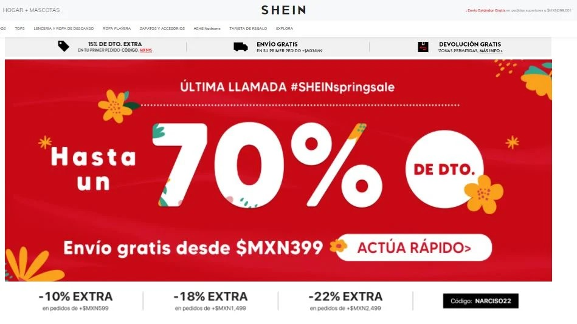

9 ejemplos de comercio electronico
1. Amazon
Si de comercio electrónico se trata, las grandes tiendas minoristas se llevan el título de los mejores representantes. Plataformas como Linio, Mercado Libre o Alibaba cuentan con sitios online para conseguir una gran variedad de mercancía. La mayoría son pure players, es decir, que no cuentan con tiendas físicas. Y Amazon es sin duda la empresa líder en el nicho.
Gran parte de su éxito se debe a la capacidad de sus motores para operar de manera casi autónoma y generar perfiles de compradores altamente específicos. Esta plataforma presenta la ventaja de ofrecer una amplia gama de productos a los consumidores, lo cual ha diversificado su cartera de clientes y penetración en el mercado.
Amazon no solamente vende productos en su sitio web. Por el contrario, los servicios digitales que ofrece representan una parte importante de sus ingresos. Amazon Web Services (AWS) es su plataforma de gestión y venta de servicios electrónicos para el análisis de datos, el uso de motores de inteligencia artificial y la administración de herramientas informáticas.
2. IKEA
La empresa sueca IKEA tiene una larga historia de innovación en los métodos de venta y consumo poco tradicionales. Ya en la década de 1940 la compañía ofrecía sus productos por medio de catálogos físicos por correo. Los compradores podían seleccionar sus muebles en estos folletos y sus compras eran entregadas directamente en casa.
En pleno siglo XXI, IKEA ha incluido los medios electrónicos para hacer más eficientes estos procesos. Actualmente, los compradores pueden acceder a una gran base de datos con miles de productos gracias a su plataforma de ventas en línea. Esto facilita que los consumidores no tengan que desplazarse a sus tiendas físicas para adquirir productos, sino que pueden hacer sus compras donde sea que estén, programar su envío e incluso gestionar problemas de entrega. Además, pueden tener una experiencia enriquecida o phygital.
3. Jokr
El comercio digital ha encontrado en la venta de comestibles un importante nicho de mercado. Debido al ritmo de vida actual y a algunos eventos que han puesto en crisis nuestros medios de convivencia, como la emergencia sanitaria, muchas personas requieren acceder a mercancías de manera rápida.
Las tiendas en línea que ofrecen alimentos y bebidas se han convertido en el canal preferido de consumo de miles de personas. Jokr es una de las plataformas de comercio online más populares en muchos países americanos, debido a que ha revolucionado los estándares de servicio a los clientes.
4. Uber
Si bien puede parecer raro encontrar a Uber en un listado de tiendas en línea, es un error suponer que el comercio electrónico únicamente se basa en la compra y venta de mercancías físicas. En realidad, gran parte del comercio digital está representado por la intermediación de operaciones comerciales convencionales y por la prestación de servicios.
Uber representa el éxito del comercio digital, ya que logró llevar una necesidad de siempre a un formato novedoso. Por medio de aplicaciones móviles, la compañía ha dado una gran solución al problema de la movilidad urbana.
Con Uber miles de personas se mueven todos los días. Adicionalmente tienen acceso a servicios de delivery que, al estilo de las tiendas de consumibles, ofrecen el envío de alimentos, bebidas y muchos otros productos a través de Uber Eats.
5. Shein
La industria de la moda ha elegido los canales de venta en línea como el mejor método no solo para hacer más eficientes las compras, sino para alcanzar a amplias audiencias de diferentes latitudes.
Shein es una empresa de venta de artículos de moda que busca crear redes de comercio a nivel mundial. La marca no cuenta con espacios de venta presencial. Por el contrario, ha apostado por el formato virtual como el mejor medio para llevar sus productos a un gran público.
6. Ben & Frank
Uno de los puntos que juegan en contra del comercio digital es que muchos clientes esperan una atención personalizada y prefieren ver los productos que les interesan antes de llevar a cabo la compra.
Ben & Frank es una empresa oftálmica mexicana que ha optimizado las experiencias de compra en línea mediante la integración de las plataformas digitales y los servicios de atención tradicionales y personalizados. Si bien cuentan con tiendas físicas donde los clientes pueden adquirir gafas graduadas, el mayor atractivo de la compañía es su servicio de venta en línea.
7. Libre Liebre Bazar
Existen micro y pequeños negocios que emplean estos medios de comercio para alcanzar a mayores audiencias y cubrir sectores de mercado más amplios.
Un ejemplo de este tipo de negocios es Libre Liebre Bazar, una compañía que centra sus operaciones en dar visibilidad a pequeños productores mediante eventos colectivos de ventas y, sobre todo, en su sitio electrónico.
8. App Store
La famosa tienda en línea de Apple es un ejemplo del éxito que puede alcanzar una buena estrategia de mercado comercial. En la App Store, los usuarios de las tecnologías de la compañía pueden comprar una serie de software en forma de aplicaciones móviles para cumplir con una gran diversidad de tareas.
9. Moonrise
Moonrise es una marca guatemalteca que promociona sus productos de nicho en línea. Anuncia sus alimentos basados en vegetales, granos y especies, con materia prima local.